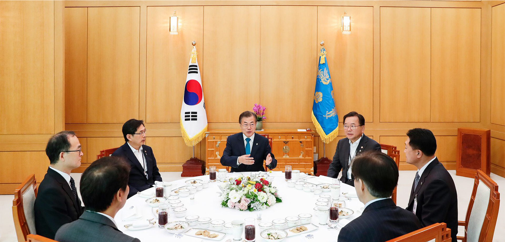

- imgbox1
- imgbox2
- imgbox3
- imgbox4
국민소통

뉴스
-

신임비서관 인사 발표 관련 고민정 대변인 서면브리핑
문재인 대통령은 오늘 신임 비서관 인사를 실시했습니다. 제2부속비서관에 최상영 제2부속비서관실 선임행정관, 일자리기획비서관에 이준협 국회의장 정책기획비서관입니다.
2019.10.04 -

NSC 상임위원회 긴급회의 개최 결과
10.2(수) 오전 7시 50분 정의용 국가안보실장 주재로 국가지도통신망을 통해 NSC 상임위원회 긴급회의를 개최하고, 오늘 북한의 발사와 관련 SLBM을 시험했을 가능성에 무게를 두고 한미 정보당국 간 긴밀한 공조를 통해 정밀 분석해 나가기로 했습니다. 상임위원들은 북한이 10월 5일 북미협상 재개를 앞두고 이러한 미사일 발사 시험을 한 데 대해 강한 우려를 표하고, 북한의 의도와 배경에 대해 한미 간 긴밀히 협의하기로 했습니다. 상임위원들은 이번 북미 간 협상이 성공적으로 개최되어 한반도의 완전한 비핵화와 항구적 평화구축을 위해 실질적인 진전이 이루어질 수 있도록 미국을 포함한 국제사회와 함께 외교적 노력을 기울여 나가기로 했습니다.
2019.10.02 -

제71주년 국군의 날 기념 다과회 및 장병 격려 오찬 관련 서면브리핑
문재인 대통령은 제71주년 국군의 날 기념식에 이어 진행된 다과 자리에서 “태풍 때문에 옥외행사가 괜찮을까 걱정이 많았지만, 여러분들이 애쓰신 덕에 사상 처음으로 이곳 대구 공군기지에서 국민께 국군의 강한 힘을 보여드릴 수 있었다”며 축하와 감사 인사를 전했습니다. 이어 문 대통령은 “데니 태극기를 선두로 22개 6.25 참전국 국기가 함께 고공 강하되지 못한 점이 아쉽다”고 말했습니다. 문 대통령은 “데니 태극기는 고종황제가 외교 고문인 미국인 데니(Denny)에게 하사한 태극기로 가장 오래된 태극기이다. 이는 한미동맹이 얼마나 오래되었으며 튼튼한지를 상징한다”며 주한미군과 유엔사 장병들에게 각별한 감사를 전했습니다.
2019.10.01 -

법무부 업무 보고 관련 서면 브리핑
문재인 대통령은 30일 오전 10시부터 35분 동안 조국 법무부 장관으로부터 ‘인권을 존중하고 민생에 집중하는 검찰권 행사 및 조직 운용 방안’에 대한 보고를 받았습니다. 또한 조 장관은 공석으로 지연되고 있는 대검찰청 감찰부장과 대검찰청 사무국장의 인사를 건의했고, 문 대통령은 수용의 뜻을 전했습니다. 오늘 보고에는 법무부 장관, 법무부 차관, 검찰국장, 검찰개혁단장이 자리했습니다.
2019.09.30 -

IOC위원장 접견 결과 관련 서면 브리핑
문재인 대통령은 24일(현지시간) 오후 5시55분부터 6시23분까지 약 28분 동안 뉴욕 유엔본부 양자회담장에서 토마스 바흐(Thomas Bach) 국제올림픽위원회(IOC) 위원장을 접견했습니다. 이 자리에서 바흐 위원장은 “평창에서 도쿄로, 또 베이징으로 이어지는 올림픽 릴레이의 성공을 바란다. 한중일 3국 협력 증진을 통해 한중일 모두에게 평화의 장이 되기를 바란다”라며 평창올림픽에서부터 시작된 한국의 노력을 높이 평가했습니다. 이에 문재인 대통령은 “바흐 위원장과 나 사이에 거리가 멀지 않은 것 같다”며 향후 긴밀히 협의해 나가기로 했습니다.
2019.09.24